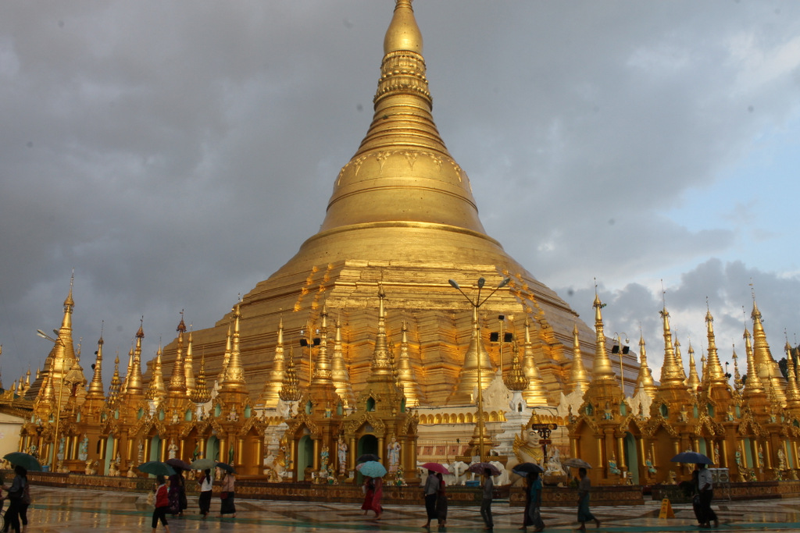
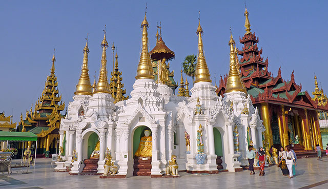

La pagode Shwedagon
La birmanie compte une majorité de bouddhiste, environ 88% de la population, qui pratiquent pour la plupart le bouddhisme theravada. Il a été introduit au 3ème siècle avant J.C. et est unique aujourd’hui, car il a su intégrer les croyances locales pour les esprits et les influences animistes et hindouistes, pour ne nommer que celles-là. Le christianisme est la deuxième religion la plus pratiquée au pays avec 6% de la population et est principalement concentrée dans la région chin. La majorité (80%) de ces chrétiens sont protestants, mais on retrouve aussi des catholiques et des témoins de Jéovah. La troisième grande religion présente est l’islam, avec 4% de la population. Elle est à prédominance sunnite et se retrouve dans les ethnies rohingya, persane, arabe, panthays et indo-birmane.
La religion revêt une grande importance en Birmanie. Il est clair que les birmans y accordent une grande valeur, vu les persécutions que subissent les minorités religieuses. Si ce n’était pas le cas, les minorités religieuses vivraient en paix, puisque les birmans ne s’arrêteraient pas au détail de la religion. Aussi, on peut voir que plusieurs des jours fériés sont en lien avec la religion, donc la religion a une certaine importance.
La pagode Shwedagon est le premier édifice religieux bouddhiste de Birmanie. D’après les textes monastiques, le stûpa (Monument bouddhique (commémoratif, funéraire…) de l'Inde et de l'Asie du Sud-Est.) aurait été construit du vivant de Gautama, c’est-à-dire au 6ème siècle avant J.C.. Cette affirmation est cependant contestée par les archéologues qui placeraient la construction du monument entre le 6ème et le 10ème siècle de notre ère.
Selon la légende, la pagode contient des reliques de quatre anciens bouddhas, donc huit cheveux du bouddha Gautama. Ce seraient deux marchands qui les auraient rapportés au roi Okkalapla dans un coffret serti d’émeraudes et avec les instructions de Gautama. Celui-ci, après avoir donné ses cheveux comme objets de vénération, ordonna que soit construit sur la colline Singuttara un zedi (stûpa), puisque c’est là que reposait déjà les reliques de trois anciens bouddhas.
Au fil des siècles, la pagode a subi plusieurs transformations. Les rois et les reines de Birmanie l’ont tour à tour reconstruite, agrandie et parée d’or. C’était une tradition pour les rois que de donner leur poids en or pour recouvrir le stûpa et de faire d’autres donations au lieu de culte. Ainsi, par deux fois des rois donnèrent une énorme cloche à la pagode. Ces cloches furent volées à chaque fois et finirent au fond d’une rivière. C’est un aventurier portugais qui déroba la première pour la faire fondre et en faire des canons et la deuxième fut subtilisée pendant la guerre anglo-birmane par les anglais. Après un siècle passé au fond de l’eau, on repêcha la seconde cloche et on l’ajouta au monument. Dans son histoire, la pagode a vécu plusieurs catastrophes naturelles, comme des tremblements de terre ou des incendies, mais a toujours été réparée.
Le site est fréquenté par des bonzes, des fidèles et des touristes. Les fidèles accomplissent plusieurs rituels, comme déposer des offrandes, verser de l’eau sur une statue ou encore marcher autour du stûpa dans le sens des aiguilles d’une montre. Ils se rendent à la pagode Shwedagon pour améliorer leur karma afin de renaître dans de meilleures conditions. Les croyants font des prières, rendent hommage à Bouddha et remercient les nats (saints).
Retour à la carte